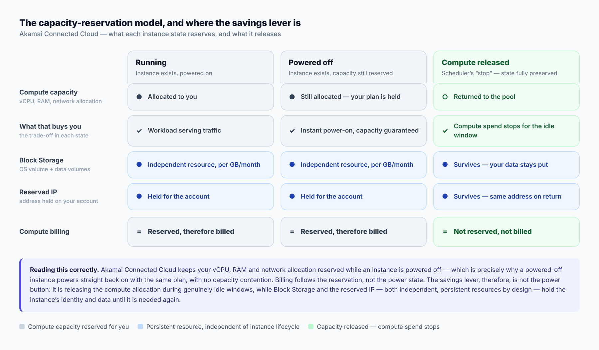
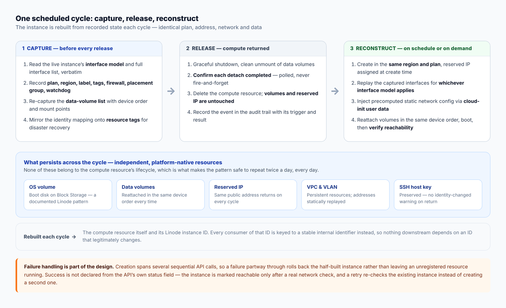
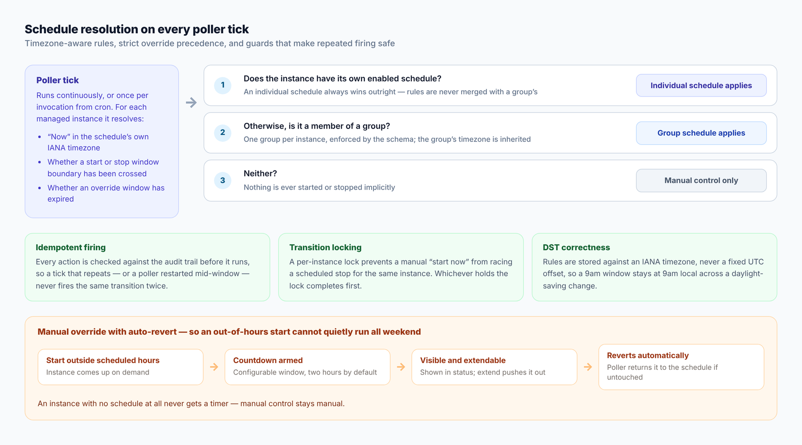

Scheduling Compute on Akamai Connected Cloud: Cutting Idle Spend Without Losing Data, IP or Network Identity
Audience: Cloud architects, platform engineering teams, and infrastructure owners running non-production or time-bounded workloads on Akamai Connected Cloud.
Summary: Development, test, staging, demo and batch environments rarely need to run twenty-four hours a day, yet they are commonly left running because taking them down safely is harder than it sounds. On Akamai Connected Cloud, compute capacity stays reserved for an instance while it is powered off — which is exactly why it returns instantly on the same plan — so the lever for idle-time savings is releasing that capacity, not toggling the power state. This article describes a production architecture that does so on a schedule, using Block Storage, reserved IPs and persistent VPC/VLAN resources to preserve everything that makes an instance that instance, and covers the engineering required to make the cycle genuinely repeatable.
Architecture and business context
Most enterprise cloud estates contain a substantial tier of workloads that are only needed some of the time. Development environments matter during working hours. Staging matters before a release. Demo environments matter when there is a demo. Batch and CI runners matter when there is a queue. Performance test rigs matter for the duration of a test.
In practice these environments tend to run continuously anyway, and the reason is rarely carelessness. It is that stopping them has historically been risky. Someone has to be confident the environment will come back exactly as it was — same address, same data, same network placement, same access — and when that confidence is missing, the safe choice is to leave everything running. Idle capacity is the price paid for predictability.
Akamai Connected Cloud provides the primitives to remove that trade-off. Block Storage volumes, reserved IP addresses, VPCs and VLANs are all first-class resources with lifecycles independent of any individual compute instance. An instance's durable identity can therefore live entirely in resources that are not affected when the compute resource itself is released. That is the foundation this architecture is built on.
Key insight
On Akamai Connected Cloud, an instance's compute allocation — vCPU, RAM and network capacity — remains reserved for you while the instance is powered off. That reservation is what guarantees the instance powers straight back on, on the same plan, with no capacity contention. Billing follows the reservation rather than the power state.
The savings lever is therefore not the power button, but the allocation itself:
Powered off → capacity still reserved for you
Released → capacity returned, state preserved elsewhereBecause Block Storage, reserved IPs and VPC/VLAN membership are independent resources, releasing the compute allocation during a genuinely idle window costs nothing in continuity. The instance is reconstructed from recorded state when it is next needed — same address, same disks, same network, same host identity.
Understanding the capacity-reservation model
Teams arriving from other cloud platforms sometimes assume that powering an instance down reduces its compute charge. On Akamai Connected Cloud the model is explicit and deliberate: the plan's resources stay allocated to the instance while it is powered off, so the instance is guaranteed to be there, unchanged, whenever it is powered back on. That guarantee has real operational value — there is no risk of a shutdown environment failing to return because capacity has been taken by someone else.
Understanding this correctly is what makes the optimization obvious. If billing follows the reservation, then the way to stop paying for idle compute is to stop reserving it.

Figure 1: What each instance state reserves and what it releases. Block Storage and the reserved IP are independent, persistent resources in every state — which is precisely what makes releasing the compute allocation safe.
The optimization opportunity
Expressed as a scheduling problem, the opportunity is straightforward. A week contains 168 hours. An environment needed on weekdays from 09:00 to 18:00 is genuinely required for 45 of them. The remaining 123 hours — roughly 73% of the week — are idle time during which the compute allocation serves no purpose.
| Schedule | Hours reserved per week | Idle hours avoided | Share of week with compute released |
|---|---|---|---|
| Always on | 168 | 0 | 0% |
| Weekdays 08:00–20:00 | 60 | 108 | ~64% |
| Weekdays 09:00–18:00 | 45 | 123 | ~73% |
| Weekdays 09:00–17:00 | 40 | 128 | ~76% |
These percentages describe avoided compute reservation, not a total bill reduction. Block Storage continues to bill per GB per month for the volumes holding the environment's operating system and data, and a reserved IP carries a small idle charge. Both are ongoing regardless of instance state — they are the cost of guaranteeing the environment returns identical, and both are modest relative to a reserved compute plan. The effect is most pronounced on larger plans, where the compute allocation dominates and the storage footprint does not scale with it.
A note on measurement. Account-level pricing varies, so this architecture deliberately reports savings as a percentage of avoided compute reservation rather than a currency figure. Two numbers are exposed: a configured figure computed directly from a schedule's own rules the moment it is set, and an actual figure reconstructed from real transition history once the schedule has been running. The second is the honest one, and it is deliberately not shown until at least one full cycle of history exists.
The pattern: capture, release, reconstruct
The mechanism is a controlled cycle. On a scheduled stop, the instance's complete configuration is captured, the compute resource is released, and every persistent resource is left untouched. On a scheduled start, a new instance is created in the same region on the same plan, the captured configuration is replayed onto it, the same volumes are reattached in the same device order, the same reserved IP is assigned, and reachability is verified before the operation is reported as successful.
From the environment owner's perspective this behaves like stop and start. The address they connect to does not change. Their data is where they left it. Their SSH client does not warn about a changed host identity. What changes underneath is the compute resource itself, which is rebuilt from a recorded specification each cycle.

Figure 2: One scheduled cycle. Configuration is re-captured before every release, so a change made out-of-band between cycles is carried forward rather than silently reverted.
One design decision deserves emphasis: configuration is re-captured before every release, not once at onboarding. If an owner attaches a VLAN through Cloud Manager, renames the instance, adds a tag or attaches another data volume while it is running, that change is part of the next capture and survives the next cycle. A design that captured once would quietly revert the environment to its original shape the first time it cycled — a failure mode that would erode trust far faster than any saving could justify.
What makes it safe: the platform primitives
The pattern is only viable because Akamai Connected Cloud exposes the right independent resources. Each one carries a specific part of the instance's identity.
A separate resource from the instance, billed per GB per month. Booting an instance from a Block Storage volume is a documented Linode pattern, intended for exactly this kind of "keep a bootable image and attach it when needed" workflow.
Once reserved, the address stays exclusive to the account within its region and can be reassigned to a newly created instance. This is what makes the returning environment reachable at the address people and systems already know.
Independent, persistent resources rather than properties of an instance. A VPC has a stable ID and subnet; a VLAN is a label on an interface. Both are reapplied to a new instance without any special preservation step.
Tags applied directly to volumes and the reserved IP record which resources belong to which managed environment — Akamai's own live account state, used here as a recovery mechanism that cannot drift out of sync.
Reserved IPs are region-locked to where they were first reserved, which is a design constraint to architect around rather than an obstacle: the engine always recreates an instance in its original region, which is correct behaviour for a scheduled environment in any case.
Technical deep dive: what makes the cycle reliable
Releasing and recreating an instance is straightforward to describe and considerably harder to make dependable enough to run unattended, twice a day, indefinitely. The following are the design decisions that mattered most, each established by live testing against the Linode API rather than inferred from documentation alone.
Two interface models, captured verbatim
Akamai Connected Cloud supports two networking configuration models, and an instance uses one or the other for its lifetime. Under the legacy model, interfaces are part of the boot configuration profile. Under the newer Linode Interfaces model, they exist independently at the instance level, with structurally different field shapes — public addresses become a list, 1:1 NAT moves to a per-address property, and an explicit flag marks which interface carries the default route.
The two shapes do not normalise cleanly into shared flat columns without losing information. The engine therefore records the model identifier verbatim and stores the interface list in whichever shape matches, then dispatches on that value at replay time. Nothing is translated into an intermediate representation, because every translation layer is somewhere a detail can be silently dropped — and a silently dropped networking detail reappears as an environment that comes back subtly different from the one that went away.
The guest must not have to discover its own network
This was the most instructive problem in the build. A persistent OS volume carries a network configuration written when that disk last booted. Booted later as a different instance, the guest can come up with the API reporting it as running while it is not actually reachable, because the configuration on disk no longer matches the address it has been given.
Two approaches were evaluated and rejected with evidence. Reverting the guest to DHCP works, but gives up static control over exactly what sits on each interface. Having the guest query the metadata service at boot has a genuine bootstrap problem: reaching that service depends on routing the guest does not yet have.
The approach that works inverts the responsibility. The orchestrator already knows the exact address, gateway and subnet for every interface, because it assigned them. It does not need the guest to discover anything. It composes a small cloud-config, passes it as user data at create time, and cloud-init writes the correct network configuration and restarts networking on that same boot. Because this runs after the platform's own early-boot configuration step, it reliably takes effect without conflicting with anything.
The general lesson. When an orchestrator already holds the authoritative value, having the guest rediscover it introduces a dependency on the very thing that may be broken. Push known state in; do not ask for it back.
Stable host identity across cycles
A newly created instance would normally regenerate its SSH host keys on first boot, which would present a changed host identity at the same address on every scheduled restart — an alarming and, repeated daily, actively harmful signal to teach people to ignore. The same user-data mechanism instructs cloud-init to preserve the host keys already present on the persistent volume. The environment returns with the identity it had, and a genuine key change remains meaningful. A host-key mismatch is treated as a security event that halts the operation rather than a condition to work around.
Assign the reserved address at creation, not after
An instance requires at least one public address, and the platform will not allow its last one to be removed. Creating an instance and then attempting to exchange its automatically assigned address for the reserved one is therefore the wrong sequence. Passing the reserved address in the creation call instead makes it the instance's address from the outset, which is both simpler and the only clean path.
Confirm detachment before releasing
Volume detachment is asynchronous. Issuing a detach and proceeding immediately to release the instance can race, leaving a volume briefly associated with an instance that no longer exists until a retry resolves it. The shutdown path therefore polls until each detachment is confirmed, with retry, before continuing. Observed behaviour, not theory — the account event log showed exactly this race during testing.
Success is verified, not assumed
An instance reporting as running through the API is not the same as an instance a user can reach. The engine records a newly created instance as unreachable first — it is real and billing, so every guard elsewhere needs to know it exists — and only promotes it to running after an independent network reachability check succeeds. A retried start re-checks the existing instance rather than creating a second one, so a transient failure cannot quietly leave an orphaned, billing instance behind.
Roll back partial work
Creation spans several sequential API calls. A failure partway through rolls the sequence back and removes the half-built instance, rather than leaving an unregistered resource consuming capacity. Combined with per-instance locking — which prevents a manual start from racing a scheduled stop — this is what makes the cycle safe to automate rather than merely possible to script.
From engine to product: scheduling
A reliable release-and-reconstruct engine is the hard half. Making it something an environment owner can operate themselves is the half that determines whether it gets adopted.
Schedules are expressed as day and time rules against an IANA timezone — never a fixed UTC offset — so a 09:00 window remains 09:00 local across a daylight-saving transition. A poller evaluates every managed environment on a short interval, resolves the applicable schedule, and enforces it.

Figure 3: Schedule resolution and the guards around it. Precedence is a strict override rather than a merge, so the applicable schedule for any environment is never ambiguous.
Groups, with unambiguous precedence
One schedule usually applies to a set of environments rather than one — an entire development estate moves together. Groups provide that, with membership limited to one group per environment and enforced at the schema level. Precedence is a strict override: an environment with its own enabled schedule follows it and ignores its group entirely; otherwise the group's schedule applies; and if neither exists, nothing happens automatically. Rules are never merged, because a merged schedule is one nobody can reason about at a glance.
Manual override that cannot be forgotten
Someone will always need an environment outside its window, and a system that makes that difficult gets disabled. Starting an environment out of hours is therefore a first-class operation — it simply arms a countdown, two hours by default. The remaining time is visible in status output, can be extended deliberately, and if nobody touches it the poller returns the environment to its schedule.
This closes the failure mode that quietly undermines most scheduling efforts: a Friday afternoon manual start that nobody remembers, running the entire weekend. An environment with no schedule at all never gets a timer, so purely manual environments stay manual.
An audit trail that answers the real question
Every transition is recorded with its trigger and result. That record serves three purposes: it answers the support question directly — why was my environment down at 09:00? — it provides the idempotency check that stops a repeated poller tick firing the same transition twice, and it is the history from which the actual-savings percentage is reconstructed.
Operating it: recovery and deployment
Recovery that does not depend on the tool's own database
A scheduler holds one piece of information that cannot be recovered from the platform by inspection: which volumes, and which reserved IP, belong to which named environment. Everything else can be re-read live.
That mapping is therefore not kept only in the tool's local database. It is mirrored onto the resources themselves as tags — additive, never replacing an owner's own tags — so the registry can be reconstructed by scanning the account. This is deliberately not a periodic snapshot: reading tags returns live account state, which cannot be stale the way a backup can. An optional object-storage layer covers the richer configuration that tags cannot structurally hold, written and read back to verify, and reconciled in full on the next cycle rather than patched incrementally.
Self-hosted, in the customer's own account
The deployment model is one instance of the tool per account, running against that account's own API token. There is no shared multi-tenant service, and no infrastructure detail or usage data leaves the customer's environment. Where a browser interface is used, sign-in is through Linode's own OAuth, with each customer registering their own OAuth client — the login answers only who the user is and is never used to call the platform API. The token that does call the API is configured once, on infrastructure the customer controls.
It runs either as services on a single host, or as a container on an existing LKE cluster, with identical application behaviour. Three interfaces sit on one shared implementation — a command-line tool, a REST API and a web dashboard — so they cannot disagree about what a schedule means.
Bringing an existing environment under management
An environment built normally has its operating system on local disk, which is tied to the instance's lifecycle. Bringing it under management requires moving that operating system onto a Block Storage volume once. This is a single scheduled maintenance window, performed with the environment's data preserved, after which the environment cycles with no further downtime beyond the scheduled windows themselves.
Environments provisioned from a prepared volume template start managed and skip this step. The one-time migration is also where a pre-flight check belongs: confirming the operating system can apply the user-data mechanism the recreate path depends on, before the first automated cycle rather than after.
When to apply this pattern
Appropriate
- Development, test, staging, demo and training environments with predictable working-hours usage
- Batch, CI and performance-test capacity that is idle between runs
- Fleets large enough that a consistent schedule across a group is worth more than per-instance attention
- Workloads where a short, bounded start-up time at the beginning of a window is acceptable
Requires additional design
- Production workloads with availability commitments — this pattern is for deliberately idle capacity, not resilience
- Environments that must respond instantly at any hour, where reconstruction time is not acceptable
- Very large single-volume storage footprints, which need a storage design that accounts for per-volume limits
- Workloads whose economics are dominated by storage rather than compute, where the percentage saved will be smaller
Conclusion
Idle non-production capacity is one of the most common and most tractable sources of avoidable cloud spend, and it persists not because teams are unaware of it but because stopping environments safely has historically been harder than leaving them running.
Akamai Connected Cloud's resource model removes that obstacle. Because Block Storage, reserved IPs and VPC/VLAN membership are independent of the compute resource, an environment's identity can survive the release of its compute allocation entirely intact. Everything else is engineering discipline: capture configuration faithfully, replay it exactly, verify rather than assume, and make the schedule something an owner can reason about and override without defeating it.
The result is that an environment needed for 45 hours a week can reserve compute for 45 hours a week — and still be at the same address, with the same data, when its owner arrives on Monday morning.
Key takeaways
- Compute capacity stays reserved while an instance is powered off, which guarantees it returns on the same plan — so the savings lever is the allocation, not the power state.
- Block Storage, reserved IPs and VPC/VLAN resources are independent of the instance lifecycle, which is what allows an environment's identity to survive a release-and-reconstruct cycle.
- Re-capture configuration before every release, so out-of-band changes are carried forward rather than silently reverted.
- Push known network state into the guest at creation rather than asking the guest to discover it.
- Preserve SSH host identity, or teach people to ignore the warning that matters.
- Verify reachability independently; an API reporting running is not the same as an environment someone can reach.
- Manual override with automatic revert is what stops a scheduling system from being quietly switched off.
- A weekday 09:00–18:00 schedule releases compute for roughly 73% of the week.
Related documentation
- Block Storage on Akamai Connected Cloud
- Boot a compute instance from a Block Storage volume
- Managing IP addresses and IP reservation
- Linode interfaces
- VPC on Akamai Connected Cloud
- Billing and payments overview
About the author
Sandip Gangdhar
Senior Technical Solutions Architect at Akamai Connected Cloud specializing in Kubernetes, networking, cloud migration, platform engineering, and infrastructure automation.
Connect with me
- Website: sandipgangdhar.com
- GitHub: github.com/sandipgangdhar
- Project: linode-instance-scheduler
- LinkedIn: linkedin.com/in/ssandippggangdhar